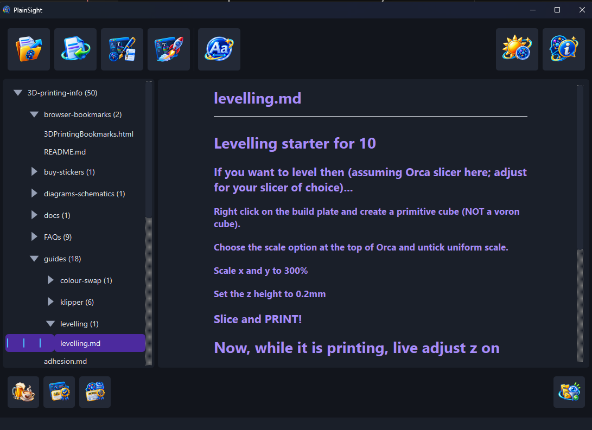

Windows · Linux · macOS
The documents you wrote
are invisible.
They sit in folders you rarely open. They accumulate quietly: some written months ago, most long out of mind. You cannot review what you cannot see. PlainSight walks a folder of Markdown, text, HTML, Word and PDF files, shows it as the tree it is on disk and renders the one you pick. It reads nothing until you choose a folder; the chooser opens on your home directory, which asks no permission of you.

The folders as they are on disk, with the document you pick rendered beside them.